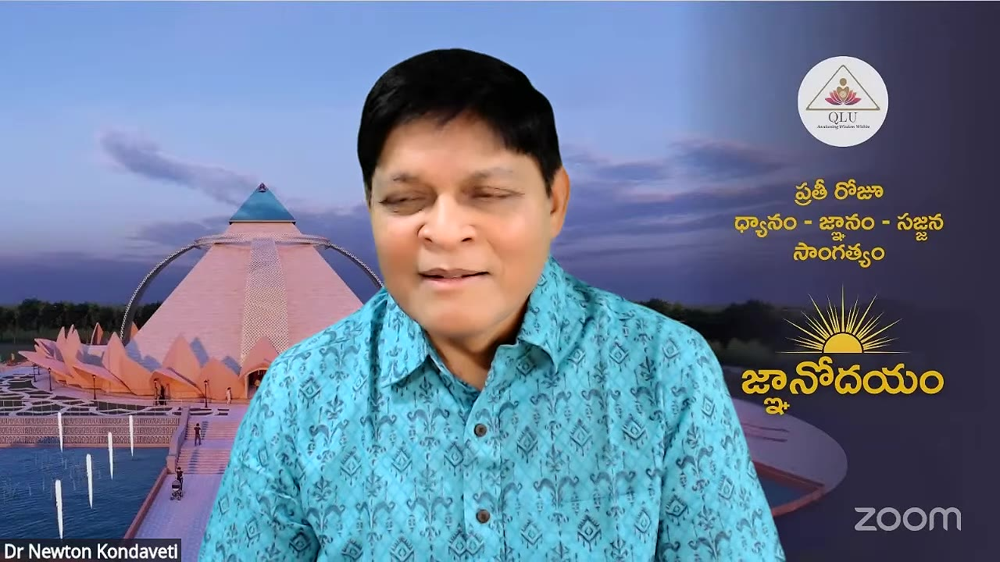

01 · Monthly Wisdom & Key Teachings · Full story
Knowing the Root Principle of Creation — The Oneness of Shakti, Consciousness, and Wisdom
The thread connecting the ninth day's teachings is directing energy through wisdom. Observing emotions, respecting nature, examining our relationship with our mother, joining outer pilgrimage with inner practice, and meditating with awareness in sacred settings all become different entrances to inner transformation. Stories, symbols, and personal experiences become meaningful when they awaken reflection and help us live with greater understanding.
Navratri Practice — Connecting with the Divine Mother's Energy
The nine days of Navratri offer an annual opportunity to dedicate oneself to spiritual practice. As the speaker explains, the purpose is not merely to learn about the Divine Mother's energy. It is to deepen one's connection with that energy, turn inward through meditation, and observe the changes unfolding within. Each period of practice can reveal a fresh understanding. With this background, he introduces principles for understanding and directing spiritual energy.
First Principle — Energy, Consciousness, and Knowledge
The reality worshipped as Jaganmata, Adi Shakti, or Divine Mother is described by the speaker in the language of shakti, or energy. In his spiritual account, meditation opens the way to experiencing energy; energy supports an awakening of consciousness; and the union of energy and consciousness gives rise to atma-jnana, knowledge of one's true nature. He is speaking here of higher Self-knowledge, rather than ordinary information or worldly learning.
He describes the stilling of thoughts in meditation, the perceived flow of universal energy, and experiences traditionally described as an awakening of Kundalini. These belong to the spiritual framework of his teaching. He then turns to the symbolic union of Prakriti and Purusha: nature represents energy, while Purusha represents consciousness. Shiva in deep stillness symbolizes consciousness; Parvati represents shakti. Ganesha and Kumara are understood within this symbolic language as expressions of wisdom.
The central teaching is not that energy and consciousness are unrelated concepts. Their integration, the speaker says, opens a deeper vision of knowledge.
Second Principle — Giving the Energy We Gather the Right Direction
Intensive practice may help a seeker gather energy, but gathering it is only one part of the work. The direction in which it is used matters just as much. The speaker refers to the significance of both Sharannavratri and the Navratri period associated with Sri Rama Navami as opportunities for dedicated practice.
He compares energy to water stored in a vast reservoir. Without a suitable channel, the water may breach its banks and cause damage; directed carefully, it becomes useful. The same principle applies to attention: where attention goes, energy flows.
When attention continually returns to grievances, loneliness, painful memories, and complaints, those patterns may become increasingly dominant. Thoughts, speech, actions, and emotional reactions all occupy our time and attention. The invitation is to recognize recurring mental habits and consciously choose a more constructive direction for one's energy.
Third Principle — Inner Realization and Accomplishment in the World
The speaker distinguishes two complementary uses of energy. Turned inward and upward in spiritual practice, it supports jnana-siddhi, the realization of wisdom. Directed outward toward meaningful work, it supports karya-siddhi, the successful completion of a task. Neither need exclude the other; what matters is the purpose served by outward action.
Hanuman provides the illustration. He already possessed tremendous strength, but that strength acquired a clear direction when it was dedicated to Rama-karya, service to Rama's great purpose. The abilities of Sugriva, Nila, Jambavan, and others came together for a common undertaking. Great work, in this account, is not simply a display of one person's power: it can be a shared effort in the service of something larger.
In ordinary life, the speaker advises replacing endless gossip, fault-finding, and complaints with satsanga, the company of people who encourage understanding and growth. Satsanga is more than social gathering; it is an atmosphere in which people share what they have learned. Rather than dwelling on another person's faults, we can practice noticing and appreciating at least one good quality in them.
The principle thus has two sides: employ energy in worthwhile work in the world, and deepen Self-knowledge within.
Fourth Principle — Emotions and Obstructions to the Flow of Energy
Having explained the gathering and direction of energy, the speaker examines what obstructs its flow. When a water pipe becomes blocked, water may spill out and leave the surrounding area muddy. Just as a plumber identifies and repairs the blockage, a seeker needs to investigate the emotional patterns that interrupt inner clarity. But the work of observing one's own reactions cannot simply be delegated to someone else; awareness itself must become the guide.
Some emotions are not born in a single moment. Fear, anger, grief, shame, and the expectation of rejection may have been carried since childhood and may return in familiar forms. Within his spiritual worldview, the speaker also relates some such tendencies to impressions from previous lives. He uses the expression emotion as energy in motion: anger and fear have force, yet their direction may not serve us well.
Gratitude and joy can leave a person feeling open and energetic, while fear, shame, and inferiority can feel draining. The talk also refers to purported research measuring emotional energy. The precise author and scientific validity of those measurements are not established by the source, so this should be read as a claim mentioned in the discourse, not as a verified scientific result.
There are two familiar responses to difficult feelings: suppress them, or discharge them onto others. The speaker proposes a third possibility. Notice the emotion, name it, and investigate where its repeated pattern may be coming from. Fears that we will not be accepted, that everyone will leave, or that we are inadequate can quietly occupy our attention. A water tank with a tiny leak eventually empties; similarly, unexamined emotional habits can gradually exhaust our sense of vitality.
He gives the example of tension at home. Even kind words or a friendly smile may be misunderstood by another person. One response is to remain wounded by the misunderstanding; another is to ask what the experience might teach us. The speaker interprets such situations through the spiritual ideas of karma and runanubandha, karmic relationship. His practical point is the importance of how we interpret an event. The event may remain unchanged, but our response can shift when our understanding changes.
He describes love, joy, peace, gratitude, kindness, compassion, enthusiasm, and optimism as life-supporting qualities. Persistent anger, fear, and hatred, by contrast, can leave us depleted. His illustration of forty days of practice seeming to vanish in one outburst of anger is best understood as a warning about losing awareness, not as a literal measurement of energy.
The Vision of Wisdom — Seeing the Lotus in the Mud
To explain a change of perspective, the speaker tells a story about a teacher and disciple visiting a muddy pond. Beautiful lotuses of pink, red, white, and yellow bloom there. Someone who notices only the mud sees an unpleasant pond. Someone who notices the flowers sees beauty. Looking still more deeply, one recognizes that the mud itself nourished the lotuses.
In the same way, difficult experiences and misunderstandings can sometimes become occasions for learning. The speaker calls the capacity to recognize and appreciate such learning Fully Appreciating Awareness. This does not mean denying pain. It means remaining open to understanding even in the presence of pain.
He also interprets emotional patterns through the language of chakras and subtle energy. Rejection, separation, and emotional hurt are associated in his account with obstructions around the Anahata or heart centre; difficulty expressing feelings is related symbolically to other centres. He also mentions Manipura, Svadhishthana, and Muladhara, along with meditation, purification of subtle channels, Vishuddhi, and movement toward Ajna. These are concepts within the speaker's yogic framework, not medical diagnoses.
When discomfort or bodily pain arises during meditation, the speaker discourages immediately concluding, “I must have done something wrong; this is punishment.” He instead encourages awareness rather than fear. Persistent or severe physical symptoms, however, still warrant appropriate medical assessment; spiritual interpretation does not replace healthcare.
An insight is a new way of seeing an experience from within. A seven-storey building looks one way from ground level and quite another from its upper floors. Likewise, a narrow viewpoint may see only problems, while a wider vision can place those same events in a larger context.
Durgamasura and Shakambari — Knowledge, Compassion, and the Three Gunas
The speaker interprets demons such as Mahishasura, Shumbha and Nishumbha, Chanda and Munda, Dhumralochana, and Raktabija as symbols of rajas, tamas, and their manifestations within human life. He then recounts the story of Durgamasura, who hides the Vedas. With knowledge seemingly lost, drought and suffering spread across the earth. The Vedas here symbolize wisdom: where understanding is absent, fear and sorrow grow; as Self-knowledge deepens, the speaker teaches, joy becomes more accessible.
Moved by the suffering of living beings, the Divine Mother appears as Shakambari. In the story as the speaker tells it, the tears flowing from the Mother's compassion become nourishing plants, vegetables, and fruit-bearing trees. Compassion takes the form of sustenance. Durgamasura is subsequently defeated. The narrative is offered not simply as an external miracle but as a symbol of knowledge overcoming ignorance and compassion overcoming indifference.
The aim of these stories, the speaker adds, is not merely to overcome rajas and tamas. Ultimately, the seeker must also move beyond attachment to sattva and toward a state described as trigunatita, beyond the three gunas. This returns the teaching to its opening principles: dedicated practice gives energy direction, supporting purposeful work outwardly and wisdom inwardly.
Mother Nature — Recognizing the Divine Mother in Creation
The Divine Mother, the speaker reminds listeners, should not be confined to a form in a shrine. Trees, animals, and the many expressions of life can be regarded as manifestations of Prakriti Mata, Mother Nature. To see nature as a living presence rather than merely a storehouse of resources is to approach it with gratitude and respect.
To explore this relationship, he turns to the most familiar image of motherhood: one's own mother. She may live in the same home, and yet there may be great emotional distance. Conversely, she may live far away while remaining close in one's heart. The question is therefore not simply physical proximity, but the quality of the inner relationship.
Judgment, criticism, and refusal to accept another person can widen that distance. The speaker's central phrase is that judgment separates us. In his spiritual interpretation, learning to see and accept one's mother more fully can also influence one's relationship with the Divine Mother. He relates outward human relationships to their inward spiritual reflections.
This invitation to self-examination should not be taken as a demand that every family relationship become close regardless of circumstances. It does not negate necessary personal boundaries or safety. Its focus is the possibility of recognizing the judgments and emotional distance within ourselves.
Pilgrimage and the Inner Journey — Transformation Matters More Than Travel
Asked about pilgrimages, the speaker does not dismiss visits to the Ganga, temples, or sacred places. Those with the opportunity and resources may go, he says. But meditation and inner practice at those places are crucial. Travel alone does not automatically transform the mind; practice undertaken at home can also become an inner pilgrimage.
He illustrates this through a story set after the Mahabharata war. The Pandavas invite Sri Krishna to accompany them on pilgrimage. Unable to join them, Krishna gives them a pumpkin to take as his representative. They are to immerse it in the rivers they visit and place it at the sites of worship before bringing it home.
According to the story as recounted in the discourse, the Pandavas carry the pumpkin for roughly forty days. Upon their return, Krishna asks that it be cooked and served. The people who eat it vomit. The Pandavas are astonished that something taken to so many sacred places could have this effect. Krishna's response points to the lesson: just as visiting holy places did not change the pumpkin's nature, travelling to holy places does not by itself transform a person's inner life. This is an illustrative story from the discourse, not a historically verified event.
The lesson is not that pilgrimage is worthless. Rather, an outward journey gains depth when accompanied by inward practice. The speaker also connects Kashi, Manasarovar, Kailasa, Jyotirlingas, and Shakti sites with inner spiritual meanings. The outer pilgrimage and the inner pilgrimage can enrich one another.
Meditation at Sacred Places — The Speaker's Kanchi Kamakshi Experience
After emphasizing the inner journey, the speaker describes the special significance he attributes to temples. While teaching in Tamil Nadu, he visited the Kanchi Kamakshi temple. He mentions traditional accounts of the intensity of the Goddess's presence there and the role attributed to Adi Shankaracharya in making that energy accessible to devotees. These are presented as spiritual beliefs shared in the discourse.
While meditating in the temple, he reports an inner experience in which Kamakshi appeared with a parrot and seemed to invite him to sit upon it. He explicitly treats this as an experience on a subtle level, inviting symbolic understanding. At the time, he says, he knew little of the Goddess's association with parrots. Afterwards he noticed parrots around the temple and in depictions of the deity, and later read accounts connecting parrots with the tradition.
He further recalls reading that sages and yogis may be present near Kamakshi in the forms of parrots. This is a spiritual tradition he reports having encountered, not a claim independently verified here. Nor does he suggest that every meditator must have the same experience.
He also mentions Srisailam and encourages visiting sacred places and meditating there when circumstances allow, while keeping the inner journey central. He speaks of prana-pratishtha, temple architecture, sacred geometry, and symbolic connections between pyramids, Mount Meru, and Sri Chakra. In his view, such settings may support meditation. Yet he advises against forcing an image of the deity into the mind: quiet sitting and inner silence matter more than trying to manufacture an experience.
Physical Difficulties and Karmic Lessons — Practising Joy with Awareness
Toward the end of the session, a participant asks about health difficulties. The speaker responds from his spiritual perspective, suggesting that persistent challenges may be approached as karmic lessons rather than punishments. He encourages letting go of fixation on the past and practising joy, contentment, and awareness in the present. His expression practice joy points toward loosening the condition that happiness is possible only when everything goes as planned.
He also notes that people can have blind spots—patterns they cannot readily recognize on their own—and that support from others may help them see more clearly. This observation is not a medical explanation for illness.
The questioner mentions recurring PCOD or menstrual-cycle difficulties. The speaker suggests seeking support, counselling, or guidance from experienced people to examine issues that may be hard to notice alone. This is a description of the spiritual and personal guidance in the talk, not a substitute for clinical care.
Medical distinction: There is no established medical basis for asserting that PCOD or other physical diseases are caused by karma. Ongoing or recurrent symptoms deserve appropriate assessment and treatment from qualified healthcare professionals. Meditation and spiritual practice may be personally meaningful, but they do not replace medical care.
Conclusion — Bringing Wisdom into Everyday Life
The thread connecting the ninth day's teachings is directing energy through wisdom. Observing emotions, respecting nature, examining our relationship with our mother, joining outer pilgrimage with inner practice, and meditating with awareness in sacred settings all become different entrances to inner transformation. Stories, symbols, and personal experiences become meaningful when they awaken reflection and help us live with greater understanding.